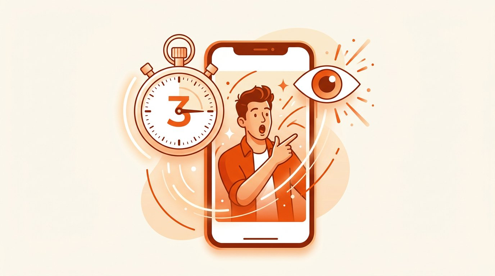
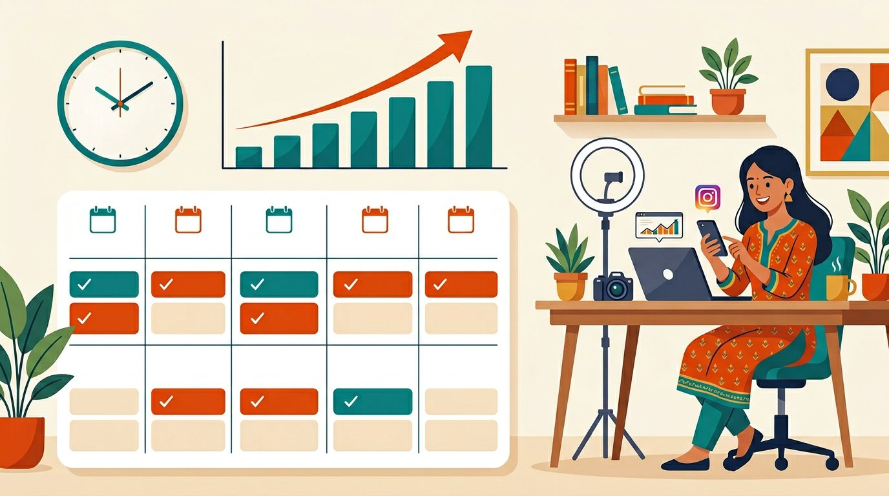

Viral Reels Strategy 2026: The Complete Instagram Algorithm Guide
Sach batau? Jab maine shuru kiya tha, mere reels pe 200 views aate the — woh bhi shayad meri hi family ke. 😅 Months tak laga ki problem mera content hai. Galat. Problem yeh thi ki main algorithm ko samajhta hi nahi tha. Aur jis din samajh aaya, sab badal gaya. 2026 mein Instagram Reels ka algorithm ek clear, repeatable pattern follow karta hai — ek baar woh seekh liya, to viral hona luck nahi, ek process ban jaata hai.
Yeh ek complete, no-fluff viral reels strategy 2026 hai — khaas Indian creators, students aur chhote business owners ke liye. Hum step-by-step todenge: algorithm decide kaise karta hai ki kya push karna hai, ek viral reel ka structure kaisa hota hai, perfect length aur posting frequency kya hai, trending audio ka sahi use, aur ek simple daily plan jo aaj se start kar sakte ho.
How the Instagram Reels Algorithm Actually Works in 2026
Most Reels flop because they are made for followers, not for the algorithm. In 2026, Instagram's distribution engine obsesses over one thing above all else: watch time. Specifically, it measures your completion rate — the percentage of people who watch your Reel all the way to the end.
When you post a Reel, Instagram first shows it to a small test audience. If those viewers watch it fully, rewatch it, save it, and share it, the algorithm rewards you by pushing the Reel to a much larger audience — and then an even larger one. This is why a small account can suddenly explode overnight. The metrics that matter most, in order of power, are:
- Completion rate & rewatches — did people watch the whole thing (or watch twice)?
- Shares — the single strongest viral signal; a share means "this is worth showing others."
- Saves — tells Instagram your content has lasting value.
- Early engagement — likes and comments in the first 60 minutes create momentum.
1. The Hook: Pehle 3 Second Jeeto

Hook hi entry gate hai. Agar pehle 2–3 second mein viewer ko nahi pakda, to baaki sab bekaar — woh scroll kar dega. Maine khud test kiya hai: ek hi reel, do alag hooks, aur views mein 4x ka difference. 2026 mein sabse zyada chalne wale hooks teen patterns mein se kisi ek ko follow karte hain:
- A bold, polarising statement: "Everything you know about Instagram hashtags is wrong."
- A visible payoff: Show the end result in the very first frame, then explain how you got there.
- A direct question: "Why are your Reels getting zero views?" — the viewer feels personally called out and keeps watching.
Crucial tip: add a text overlay in the first frame. Many people scroll with the sound off, so your hook must work visually. A strong on-screen line in the first second buys you 2–3 extra seconds of watch time before the audio even registers. If you struggle to write hooks, our free AI Caption Generator can produce scroll-stopping opening lines in seconds.
2. Retention: Keep Them Watching
Once the hook lands, retention is king. The longer people watch, the harder the algorithm pushes. Practical ways to hold attention:
- Fast cuts: change the visual every 1–2 seconds so the eye never gets bored.
- Tight scripting: remove every unnecessary word; dead air kills retention.
- Dynamic angles: mix close-ups, wide shots and movement to keep it visually fresh.
- Open a loop: tease something ("wait for the last tip") that only pays off at the end.
3. The Perfect Reel Length
Instagram allows Reels up to 90 seconds, but the sweet spot for viral reach is dramatically shorter. Because the algorithm weights completion rate so heavily, a 7 to 15 second Reel watched to the end sends a far stronger signal than a 60-second Reel that people abandon at the 30-second mark.
If your idea genuinely needs more time, that is fine — but then your job is to keep engagement high throughout, not to artificially pad the video. Shorter, rewatchable Reels remain the safest bet for explosive reach.
4. The Loop Trick
One of the most underused tactics is the seamless loop. Design your Reel so the ending connects perfectly back to the beginning. When done well, viewers do not notice the video restarting, which dramatically increases rewatches — and rewatches are pure rocket fuel for the algorithm.
5. Trending Audio (Use It Within 48 Hours)
Trending sounds matter, meaningfully so. Instagram clusters Reels that use the same audio, giving your content passive exposure to everyone already browsing that sound. The boost is real but time-limited — act within 48 hours of spotting a rising sound. Originality still wins, so make sure the audio fits your content naturally instead of forcing a trend that does not match.
6. Saves & Shares: Engineer Them On Purpose
Saves and shares are the most valuable engagement signals, so design your Reels to earn them:
- To earn saves: deliver genuine value — actionable tips, step-by-step lists, or "save this for later" reference content.
- To earn shares: make people feel something (relatable, funny, inspiring) or give them content they want to send to a specific friend.
End every Reel with a clear, low-friction call to action like "Save this so you don't forget" or "Tag a creator who needs this."
7. The Consistency Engine

2026 ka data clear hai: jo accounts hafte mein 4–5 reels daalte hain, unki reach ek-do reel daalne walon se kaafi zyada hoti hai. Main ye galti khud kar chuka hoon — mood aaya to 3 reels ek din, phir hafte bhar gायab. Aise kabhi growth nahi hoti. Consistency algorithm ko signal deti hai ki tu ek active, reliable creator hai. Par dhyaan rahe — quantity se quality bada hai. 4 strong reels hamesha 7 jaldbazi wali reels se aage rahengi.
Best Times to Post for Indian Creators
Timing amplifies everything. For Indian audiences, the strongest windows are typically:
| Day | Best Window (IST) |
|---|---|
| Tuesday – Thursday | 11 AM – 1 PM & 7 PM – 9 PM |
| Friday – Sunday | 8 PM – 11 PM |
These are starting points — always check your own Instagram Insights to find when your audience is most active, then post 30 minutes before that peak.
What to Do in the First Hour After Posting
The first 60 minutes decide a Reel's fate. Right after posting:
- Share the Reel to your Story immediately.
- Stay active in the app — reply to every early comment fast.
- Engage with other accounts in your niche during this window.
This activity tells Instagram you are an engaged creator and improves how widely your Reel gets distributed.
Quick Reference: Viral View Benchmarks
| Follower count | "Viral" views |
|---|---|
| Under 10K | 50,000 – 100,000 |
| 10K – 100K | 250,000 – 500,000 |
| Above 100K | 1,000,000+ |
But never forget: engagement per view beats raw numbers. A 25,000-view Reel with 2,000 saves outperforms a 200,000-view Reel nobody interacts with.
Common Mistakes That Kill Reach
- Boring start: a slow first 3 seconds guarantees a scroll-past.
- No editing: raw, unstructured clips have weak retention.
- Random niche: jumping between unrelated topics confuses the algorithm and your audience.
- Ignoring captions: a weak caption wastes the engagement your video earned.
Write scroll-stopping captions in seconds 🚀
Pair this strategy with our free AI tools — captions, hashtags and bios built for Indian creators. No signup, ever.
Try the Caption Generator →Final Word (Ek Creator Se Doosre Ko)
Reels pe viral hona 2026 mein koi magic nahi hai — yeh ek system hai. Hook strong banao, retention maximise karo, reels short aur rewatchable rakho, trending audio jaldi pakdo, saves aur shares ko jaan-bujhke design karo, aur sahi time pe consistently post karo. Algorithm ko samajh lo, aur game tumhare favour mein aa jaayega.
Aur haan — ek baat yaad rakhna jo mujhe late samajh aayi: har reel viral nahi hogi, aur woh bilkul normal hai. Top creators ki bhi 1 viral reel ke peeche 20 flops hote hain. Bas posting band mat karna. Ab jao, apni agli reel banao — aur pehle 3 second ko count karwao. 🚀
Frequently Asked Questions
How many views make a Reel viral in 2026?
For accounts under 10K followers, 50,000–100,000 views is genuinely viral. Larger accounts need 250K–1M+. Engagement rate matters more than raw views.
What is the best Reel length to go viral?
7 to 15 seconds works best because the algorithm rewards completion rate. Short, rewatchable Reels beat long ones people abandon.
How often should I post Reels?
4 to 5 quality Reels per week is the sweet spot for steady growth. Consistency beats occasional posting, but quality beats quantity.
Does trending audio really help?
Yes — Instagram groups Reels by sound, giving you passive reach. Use a rising sound within 48 hours and make sure it fits your content.